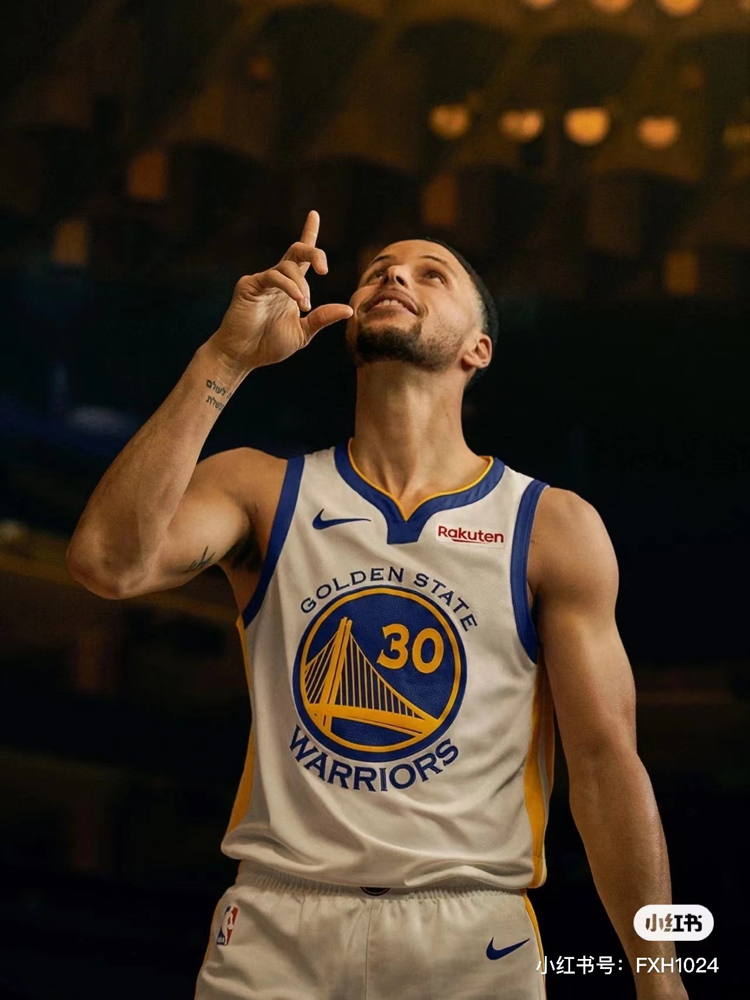
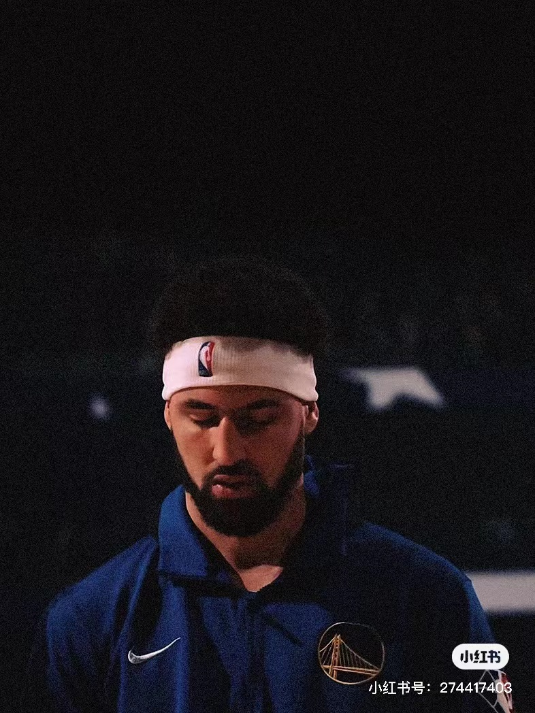
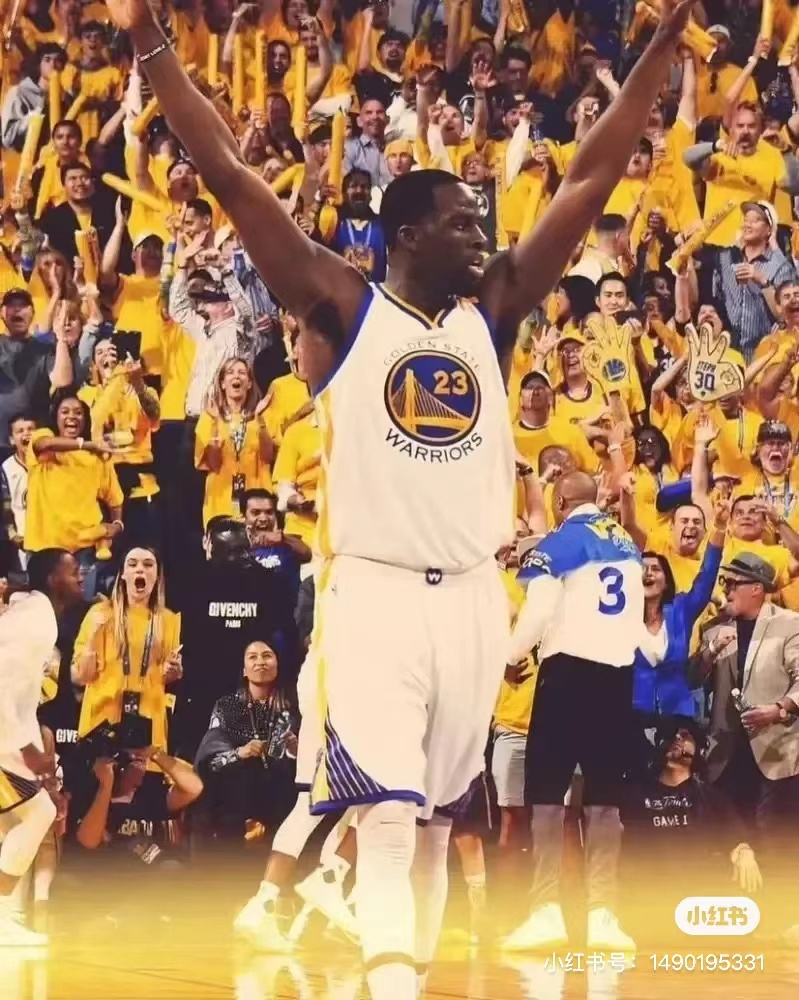
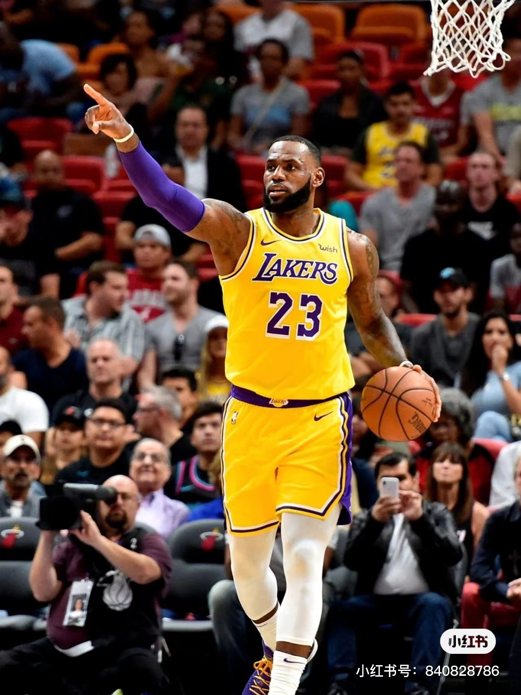
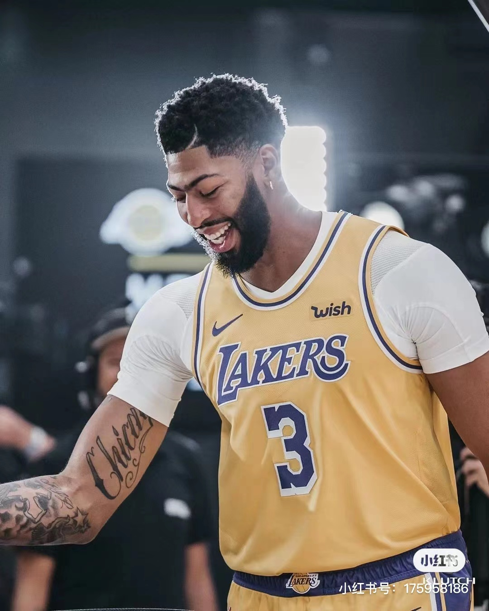
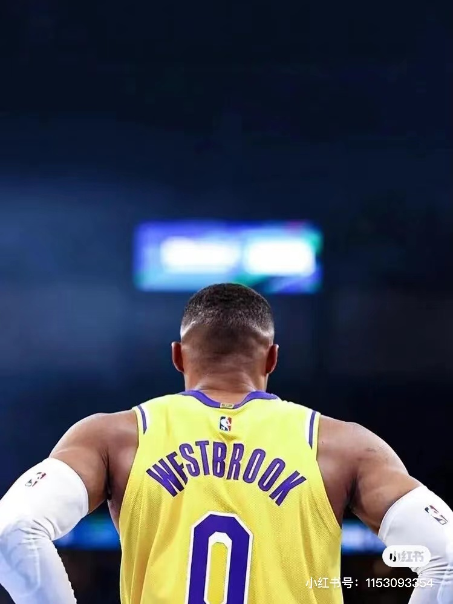
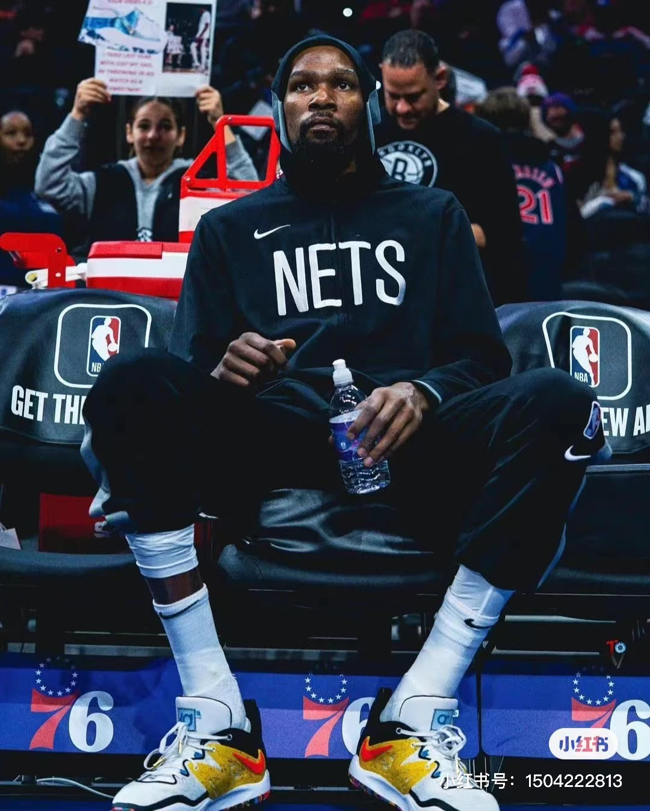
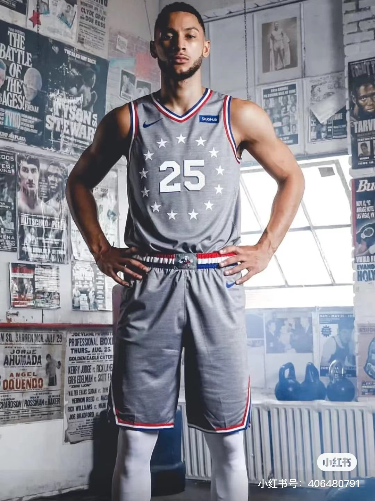

北京时间12月4日，NBA常规赛，勇士主场120-101战胜火箭，收获主场第11胜，目前勇士主场11胜1负，主场战绩排联盟第2，仅次于太阳（12胜2负）。
本场比赛，勇士全队三分球52中25，得到75分。而火箭这边，三分球28中3仅得到9分。据统计，75-9的三分球得分差是NBA历史第二大分差，第一为上个赛季爵士与魔术的78-6。
除此之外，再过去5场比赛中，勇士有4场比赛都至少命中了20记三分，创造了队史记录！
NBA
北京时间12月4日，据NBA记者迈克尔-斯科托报道，篮网球员渡边雄太接受专访，谈到了自己的NBA生涯。
渡边雄太在谈到作为日本球员的身份时说道：“能代表日本征战NBA，我认为这非常重要。
当被问及是否有考虑过未来会如何时，渡边雄太说道：“我不知道未来会发生什么，即便在哪天我的合同得到全额保障了，又或是我得到了一份多年合同，
我打球的方式也不会变，我会一直让自己在高强度的比赛中拼尽全力。每天我都会觉得这是自己在NBA的最后一天，我不会认为任何东西是理所当然的。
渡边雄太本赛季场均可以贡献8.1分2.9篮板，三分命中率57.1%全联盟最高。
科比布莱恩特
这里是科比的解说；
If you're afraid to fail then you're probably going to fail. 如果你害怕失败，那意味着你已经输了。
这句话本身具有两层意思，鞭策自己，提醒自己。其一，因为输不起，所以害怕失败，因为害怕失败，所以注定输；其二，因为怕输，所以自己会更努力追求胜利，因为怕失败，所以自己也会拼命去努力追求成功，因为怕被淘汰，所以就会努力使自己变得强大！
24号的意义就是24小时，我希望把自己的所有精力都投入到篮球当中，这就是我选择24号的原因。如果不能全身心认真投入，我就不是科比。24是我的最佳诠释。
斯蒂芬库里
1988年3月出生的美国职业篮球运动员
斯蒂芬·库里（Stephen Curry），全名沃德尔·斯蒂芬·库里二世（Wardell Stephen Curry II），1988年3月14日出生于美国俄亥俄州阿克伦，美国职业篮球运动员，司职控球后卫，效力于NBA金州勇士队
斯蒂芬·库里于2010年随美国队获土耳其世锦赛冠军，2014年随美国队获西班牙篮球世界杯冠军
斯蒂芬·库里于2009年通过选秀进入NBA后一直效力于金州勇士队，新秀赛季入选最佳新秀第一阵容
凯文杜兰特
全名凯文·韦恩·杜兰特（Kevin Wayne Durant），1988年9月29日出生于美国华盛顿哥伦比亚特区，美国职业篮球运动员，司职前锋，效力于NBA布鲁克林篮网队
勒布朗詹姆斯
全名勒布朗·雷蒙·詹姆斯（LeBron Raymone James），1984年12月30日出生于美国俄亥俄州阿克伦，美国职业篮球运动员，司职小前锋，效力于NBA洛杉矶湖人队；
勒布朗·詹姆斯在2003年NBA选秀中于首轮第1顺位被克利夫兰骑士队选中，在2009年与2010年蝉联NBA常规赛最有价值球员（MVP）
勒布朗·詹姆斯篮球智商极高、突破犀利，拥有出色的视野和传球技术，被认为是NBA有史以来最为全能的球员之一。
洛杉矶湖人队（Los Angeles Lakers） [1] ，是一家位于美国加利福尼亚州洛杉矶市的篮球俱乐部。球队1947年成立于明尼阿波利斯，后于1960年搬迁到了洛杉矶
“湖人”指在美国东北五大湖地区工作或者居住的人 [2] ，这个单词来源于明尼苏达州的别称“万湖之州”。由于球衣颜色的关系，湖人又被称为“紫金军团”。
湖人于1948年加入NBA。球队的最大特点是总会有巨星与它联系在一起
50年代，乔治·迈肯是球队早期主力中锋，他带领湖人6年间5次夺得总冠军，很快成为了NBA中的豪门球队。60年代，在埃尔金·贝勒、杰里·韦斯特、威尔特·张伯伦的带领下，湖人在整个60年代从未缺席过季后赛。
1975年，“天勾”卡里姆·阿布杜尔-贾巴尔加盟湖人；1979年，湖人选中“魔术师”埃尔文·约翰逊，他在新秀赛季便带领球队夺冠并当选为FMVP，还同贾巴尔和詹姆斯·沃西一起在80年代先后夺得了5次总冠军。
截至2021-22赛季，湖人队史共62次进入季后赛 [1] 、32次获得西部冠军、17次获得NBA总冠军，常规赛最高连胜纪录为33场（均为NBA历史最高）。
金州勇士队（Golden State Warriors）于1946年成立并加盟BAA（1949年加盟NBA），是一支属于美国加利福尼亚州旧金山市的职业篮球队，是美国职业篮球联赛（NBA）西部联盟太平洋赛区的一部分
勇士队主场原来在宾夕法尼亚州的费城，1962年才搬到加州；由于加州的昵称是“金州” [2] ，故取名“金州勇士” [1]
它是最早加盟NBA的11支球队之一；在NBA历史上，曾七次夺得总冠军 [62] ，NBA的第一次总冠军得主就是勇士队；威尔特·张伯伦效力勇士队期间缔造了NBA单场最高分纪录100分。
在唐·尼尔森成为球队教练后，勇士队成为了一支可以为季后赛席位展开争夺的劲旅，2006-07赛季季后赛第一轮更是淘汰常规赛冠军小牛队创造NBA史上第3个“黑八奇迹”
2014-15赛季，勇士以67胜15败排名西部联盟第一
布鲁克林篮网队（Brooklyn Nets），是一支属于美国的纽约州纽约市布鲁克林区为基地的男子职业篮球队，属于NBA，于1967年组队并在1976年加入NBA联盟，是美国男篮职业联赛东部联盟大西洋赛区的一部分。
布鲁克林篮网队原为新泽西篮网队，球队在1976年加入NBA联盟后，未夺得总冠军，但分别在2001-02和2002-03赛季获得东部联盟的头名
在2004年球队被转让给布鲁斯·拉特纳，2012-13赛季，篮网队正式由新泽西迁往纽约市的布鲁克林区，继2006-07年赛季后，闯入NBA季后赛
2019年随着夏季转会期凯里·欧文、凯文·杜兰特等明星球员的加盟，以及交易过的詹姆斯·哈登，布鲁克林篮网队一跃成为东部极具竞争力的一支球队。
在1967年加入ABA之初，球队是ABA联盟（American Basketball Association）的11支初始球队之一，联盟希望这支球队落户在纽约，以期壮大自己的声势，与NBA分庭抗礼。然而球队最终却被命名为“新泽西美洲人队”，成为一家在新泽西州蒂内克市某个被改造过的兵工厂里打球的乡下球会。
1967-68赛季，美洲人队参加的第一场比赛是在1967年的10月23号，对手是匹兹堡风笛手队。
在全场大约3000名球迷面前，约基·贝拉为双方跳球。美洲人队在其处子赛季取得36胜42负的战绩，一月份从奥克兰橡树队换来的列文·塔特成为球队的得分王，每场可以砍下23.6分，在ABA排名第三。
在篮板方面，惠特尼每场抢下12.9个篮板，为全队最高。球会的防守在联盟里是第三差的，得分是第四少的。
虽然联盟里最好的五个罚球高手里有三个来自美洲人队，球队的罚球命中率高居联盟第二。
但是高罚球命中率并不能把球迷吸引到新泽西蒂内克来：那个赛季每场观众不足千人。新泽西人的36胜42负的战绩和肯塔基上校队相同，同排在ABA联盟的东区第四。所以在加赛场中，美洲人队不敌肯塔基上校队，无缘季后赛。
NBA球员信息
| 球队 | 球员 | ||
| 勇士 |  |  |  | 姓名 | 库里 | 克莱 | 格林 |
| 湖人 |  |  |  | 姓名 | 詹姆斯 | 戴维斯 | 威少 |
| 篮网 |  |  | 姓名 | 欧文 | 杜兰特 | 西蒙斯 |